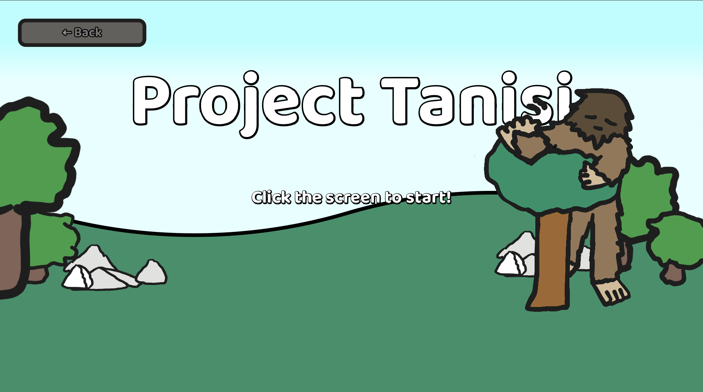

Indigenous Language Learning Platform
What It Is
Indigenous youth in Saskatchewan don’t have many engaging digital tools for learning their languages. Our team at Saskatchewan Polytechnic built a Duolingo-style web app to change that, with interactive lessons and quizzes that teach language and culture together.
I built the front end: the quiz interface, the UI layout, and the JavaScript for scoring and progression. We worked in Git, held regular stand-ups, and revised after each sprint. We finished with a working prototype and presented it to faculty and classmates.
What I Learned
This was the first time I worked on a team where code had to integrate across multiple contributors. I learned that clear commit messages and small, reviewable pull requests matter just as much as the code itself.
Where It Points
Explaining technical decisions to people who aren’t technical is a skill I use now. Whatever I build next, whether it’s systems or networking software, I want it to be easy for the people relying on it to understand and use.